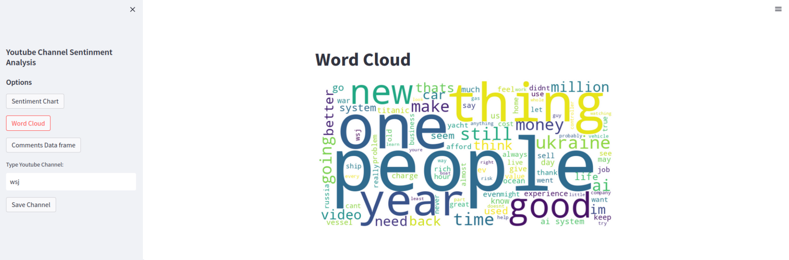

Youtube Sentiment Analysis
This project utilizes various technologies and libraries to provide powerful functionalities. Below is an overview of the components used:
Technologies Used:
- YouTube API: Integrated the YouTube API to retrieve channel information, video data, and comments from YouTube. This involved authenticating the API requests and handling the API responses.
- Streamlit: Utilized Streamlit, a web application framework, to create an interactive dashboard for the sentiment analysis tool. Developed user interface components, such as text inputs, buttons, and data visualizations, to enhance user experience.
- Flask: Implemented a backend API using Flask, a micro web framework, to handle data processing tasks. The API received requests from the frontend, processed the data using TextBlob for sentiment analysis, and returned the results to the frontend.
- Docker: Employed Docker for containerization, enabling easy deployment and scalability of the application. Created Docker images for the frontend, backend, and data processing components, allowing them to run independently and communicate with each other through defined interfaces.
- TextBlob: Utilized the TextBlob library, a powerful NLP tool in Python, for sentiment analysis of the extracted comments. Performed sentiment classification on the comments to determine their polarity (positive, negative, or neutral) and subjectivity.
Functionalities:
The project offers the following functionalities:
- Retrieve channel information and latest videos from YouTube using the YouTube API.
- Extract comments from the videos and perform sentiment analysis using TextBlob.
- Generate visualizations, such as word clouds and sentiment charts, to analyze the sentiment of the comments.
- Display a data frame with the extracted comments for further analysis.